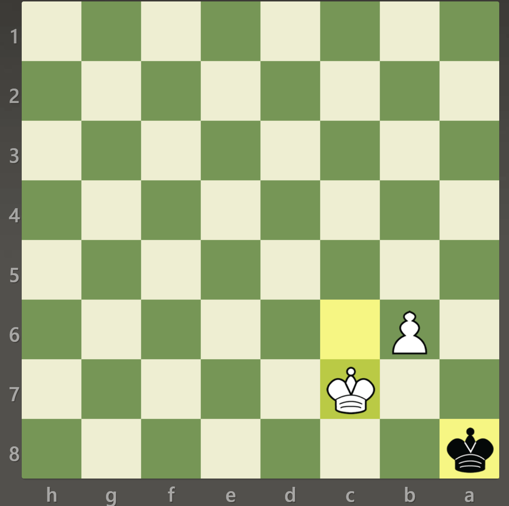

Как се матира с пешка и цар
- Напредване на пешката: Първо, започнете с напредване на пешката си към осмия ранг. Целта е да повишите пешката до дама или друга желана фигура. За да направите това, бутнете пешката напред, като се уверите, че е защитена от вашия цар.
- Подкрепете промоцията на пешката: Докато напредвате пешката, е важно да подкрепите нейната промоция. Преместете краля си по-близо до пешката, за да осигурите защита и да поддържате силна позиция. Вашият цар ще играе решаваща роля в защитата на пешката и създаването на заплахи за чифтосване.
- Създайте шаблон за матиране на поп и пешка: След като вашата пешка достигне седми ред, опитайте се да създадете модел на мат, включващ вашия цар и пешка. Обикновено този модел включва ситуация, в която вашият цар и пешка работят заедно, за да ограничат царя на опонента и в крайна сметка да дадат мат.
- Активирайте вашия цар: Координирайте вашия цар с напредващата пешка, за да ограничите движението на противниковия цар. Използвайте царя си, за да блокирате полетата за бягство и да ограничите царя на опонента да достигне безопасни зони на дъската.
- Повишете пешката: Когато пешката достигне осми ранг, повишете я до дама или друга желана фигура. Изборът на царица обикновено е най-ефективният вариант поради по-голямата й атакуваща сила.
- Поставяне на мат: С вашите повишени дама и поп, работете заедно, за да нанесете мат на единствения поп на опонента. Използвайте мобилността на вашата дама и подкрепата на вашия цар, за да матирате царя на опонента. Стремете се да създадете ситуация, в която царят на противника няма законни ходове за бягство или блокиране на мат.
